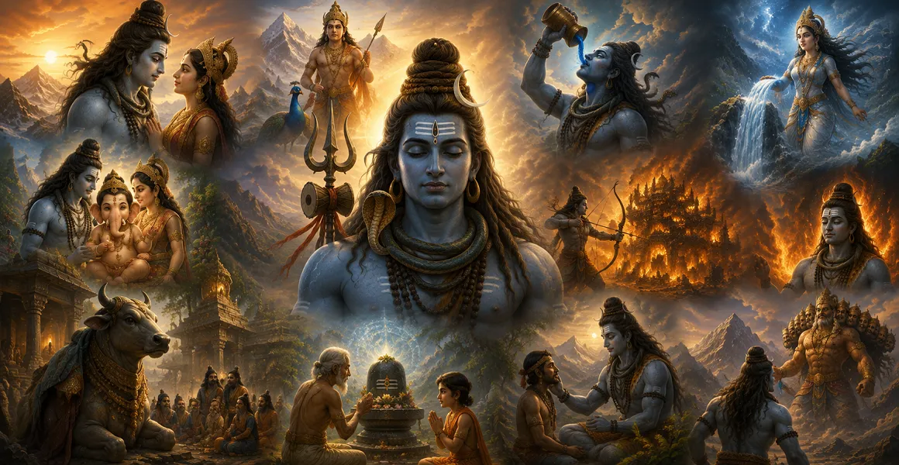

Shiva, the Birthless Lord
জন্মহীন পরমেশ্বর শিব
Shiva is remembered as the eternal and birthless Lord, beyond ordinary beginnings and endings. His mystery draws the devotee toward the timeless reality behind creation.

The stories of Lord Shiva are more than ancient narratives. They carry devotion, mystery, courage, compassion and profound spiritual symbolism, inviting the listener to remember Mahadeva with a deeper heart.
Some stories reveal Shiva as the compassionate Lord who protects His devotees. Others reveal the ascetic Mahayogi, the loving husband of Parvati, the father of Ganesha and Kartikeya, the destroyer of evil, and the Lord whose grace becomes a refuge even in the face of death.
Each story opens a different window into the many-sided glory of Shiva. Read slowly, remember the Lord, and allow the deeper devotional meaning of each narrative to unfold.
Shiva is remembered as the eternal and birthless Lord, beyond ordinary beginnings and endings. His mystery draws the devotee toward the timeless reality behind creation.
The union of Shiva and Parvati is one of the most beloved sacred narratives. Their story brings together ascetic stillness, devotion, divine love and the mystery of Shakti.
The beloved story of Ganesha's birth reveals the fierce protection of a mother's command, the compassion of Shiva, and the transformation that follows divine grace.
The sacred narratives surrounding Kartikeya reveal the divine purpose behind his manifestation and his role as a radiant protector of the devas.
When the mighty Ganga descended toward Earth, Shiva received her force within His matted locks. The story celebrates divine compassion, restraint and the sacred river's descent.
During the churning of the cosmic ocean, terrible poison emerged. Shiva accepted it to protect creation and became celebrated as Neelkantha, the blue-throated Lord.
Markandeya's unwavering devotion leads him to the protection of Shiva when the appointed moment of death arrives. The story is cherished as a powerful expression of faith and divine grace.
When the devas sought to awaken Shiva from deep meditation, Kama approached the great yogi. The story speaks of the power of concentrated consciousness and the mystery of desire.
The story of Ravana and Kailash reminds us that immense power without humility can become a burden, while sincere devotion can transform even the proudest heart.
As Tripura became a symbol of overwhelming demonic power, Shiva appeared as Tripurantaka. His victory is remembered as the triumph of divine order over destructive pride.
The story of Kannappa is treasured for its radical simplicity: the Lord sees the heart of His devotee. His devotion becomes a timeless reminder that sincere love is greater than outward display.
Across countless sacred narratives, one theme returns again and again: the compassionate Lord responds to sincere devotion. Remembering these stories becomes itself a form of worship.
In the devotional tradition, sacred stories are not merely told for entertainment. They are remembered, recited and heard as a way of turning the mind toward the Divine.
Remembering the compassion, power and grace of Mahadeva can awaken reverence and loving remembrance within the heart.
Sacred narratives often communicate profound truths through divine images, events and characters that remain alive in devotional memory.
A devotee may begin with a story, but through repeated remembrance the story can become a personal doorway into prayer and surrender.
After reading a sacred story, there is no need to hurry to the next one. Pause. Close the eyes if you wish. Remember the form of Shiva that appeared in the story and quietly repeat His name.
"May the stories of Mahadeva become remembrance in the heart, devotion on the lips, and peace in the mind."
🔱 Har Har Mahadev 🔱These stories are only an entrance into the vast devotional world surrounding Mahadeva. Enter the Shiva Purana to explore sacred narratives, incarnations, Jyotirlingas, divine teachings and the glory of Lord Shiva in greater depth.
📖 Enter Shiva Purana